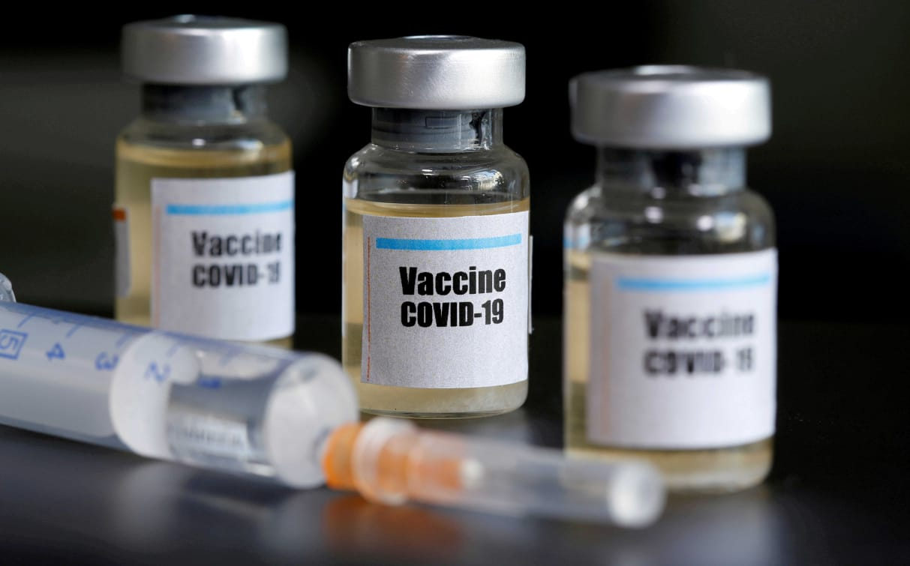

Yes, there are now several vaccines in use. The first large-scale vaccination program began at the beginning of December 2020, and as of February 15, 2021, 175.3 million doses of vaccine had been used. At least 7 different vaccines (3 vaccine bases) were used.
WHO issued authorization for emergency use of Pfizer's COVID-19 vaccine (BNT162b2) under the Emergency Use Protocol on 31 December 2020. On 15 February 2021, WHO issued authorization for the use of two versions of AstraZeneca/Oxford COVID-19 vaccine, Manufactured by the Serum Institute of India and SK Bio, in emergency situations under emergency use protocol. On 12 March 2021, WHO issued emergency use authorization for the Ad26.COV2.S COVID-19 vaccine developed by Janssen (Johnson & Johnson) under the Emergency Use Protocol. WHO is on track to issue emergency use authorizations for other vaccines under the Emergency Use Protocol by June.
WHO provides information on products and on progress in its regulatory review, and updates it regularly. This document can be found here.
Once they are proven safe and effective, vaccines must be approved by national regulatory authorities, manufactured according to strict standards, and then distributed. WHO is working with partners around the world to help coordinate key steps in this process, including facilitating equitable access to safe and effective COVID-19 vaccines for the billions of people who will need them. More information on the development of COVID-19 vaccines can be found.

-Steps to register the Corona vaccine electronically 2021
The data of those wishing to obtain a vaccine for the emerging coronavirus, Covid 19, can currently be registered through the website of the Ministry of Health and Population👇👇👇